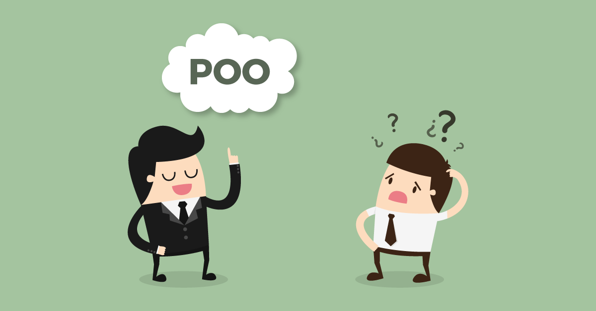
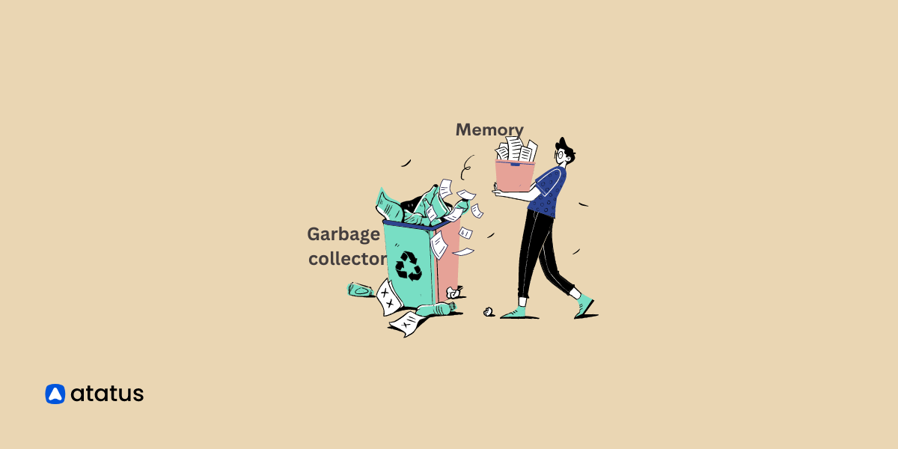
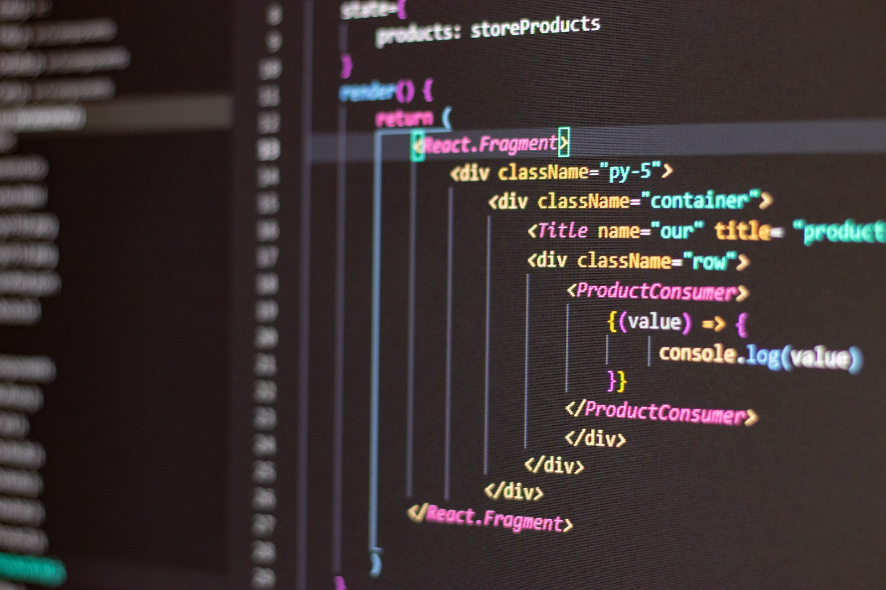

Quais são as principais diferenças entre
programação orientada a objetos (POO) e
programação funcional?

Como funciona a coleta de lixo (garbage collection)
em linguagens de programação como Java e Python, e por
que é importante para a gestão de memória?

O que são algoritmos de ordenação estável e
instável? Dê exemplos de cada um e explique quando você
usaria um em vez do outro.